连接器
连接器用于将 WorkBuddy 与外部服务进行对接，实现数据互通与能力扩展。通过配置连接器，您可以让 WorkBuddy 直接访问和操作第三方服务。
概述
连接器是 WorkBuddy 与外部服务之间的桥梁，将外部能力引入 AI 工作流。
技术形态分为：
- MCP + CLI（标准化协议）
- Skill + CLI（内置脚本）
二者在数据收集和权限边界上遵循一致原则。
当前已支持 QQ 邮箱、腾讯文档、腾讯乐享、腾讯会议、TAPD 等连接器，并支持自定义连接器；新增连接器将同步更新隐私协议相关条款。
应用场景
| 场景 | 说明 | 示例 |
|---|---|---|
| 数据查询 | 从外部数据源获取信息 | 查询数据库、检索文档 |
| 服务调用 | 调用第三方 API 完成操作 | 发送邮件、创建日程 |
| 文件管理 | 访问云端存储与文件系统 | 读取网盘文件、上传附件 |
| 消息通知 | 与即时通讯工具集成 | 发送企业微信/飞书消息 |
连接器管理
在左侧导航栏中点击 连接器，即可进入连接器管理页面。页面展示所有可用的连接器，当前支持 QQ 邮箱 、腾讯乐享、腾讯文档、TAPD 和 腾讯网盘，并支持自定义连接器。
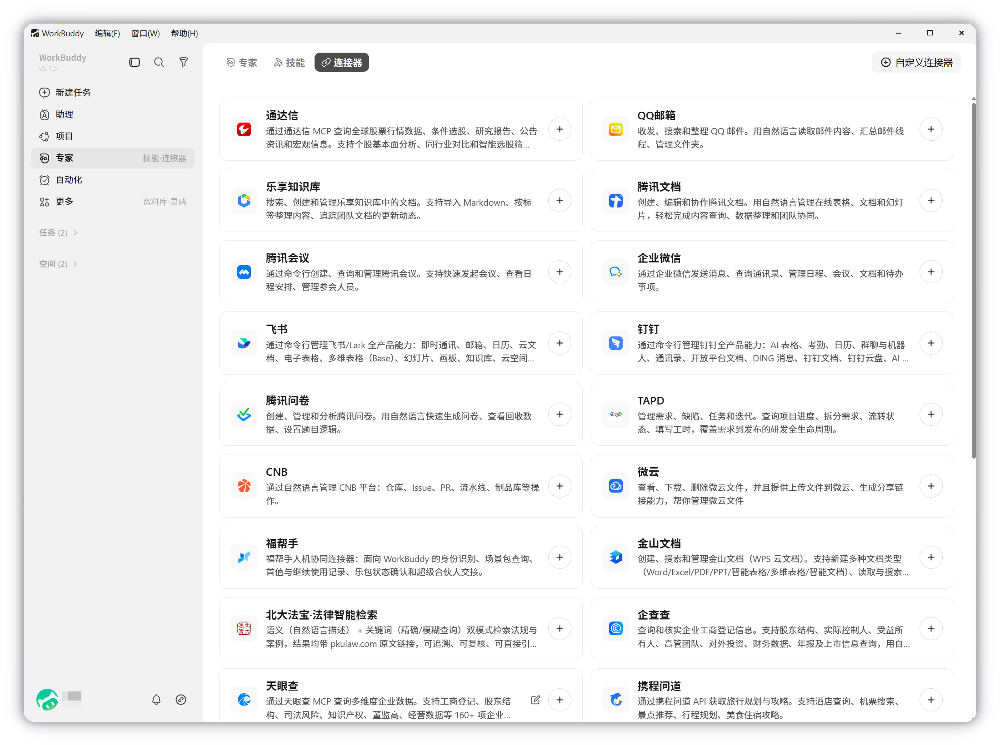
在消息框中支持快捷管理连接器：
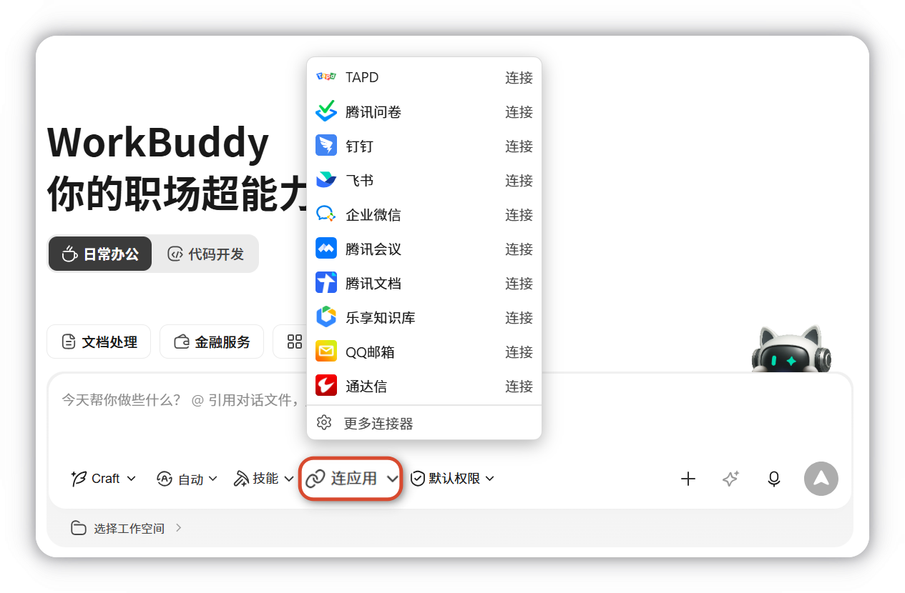
示例：连接 QQ 邮箱
QQ 邮箱连接器支持收发、搜索和整理 QQ 邮件，用自然语言读取邮件内容、汇总邮件线程、管理文件夹。
1. 点击添加
在连接器管理页面找到 QQ 邮箱 卡片，点击右侧的 + 按钮发起连接。
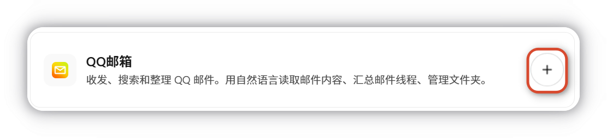
2. 扫码授权
系统会跳转到 QQ 邮箱授权页面，显示二维码。使用 QQ 邮箱 App（7.1.5 / 鸿蒙 0.2.9 及更新版本）扫码进行授权。
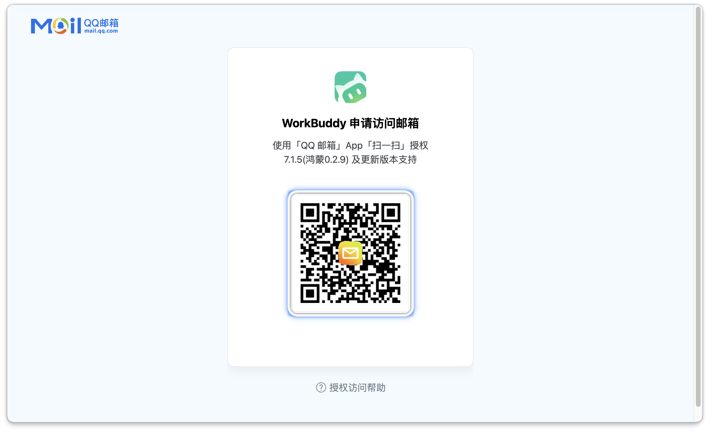
3. 确认权限
在手机端确认 WorkBuddy 申请的访问权限，包括：
- 账号信息：获取邮箱账号基础信息
- 读取邮件：读取收件箱内近一个月的邮件
- 发送邮件：代为发送邮件
- 删除邮件（可选）：已删除邮件会移入「已删除」文件夹
确认无误后点击 同意授权。
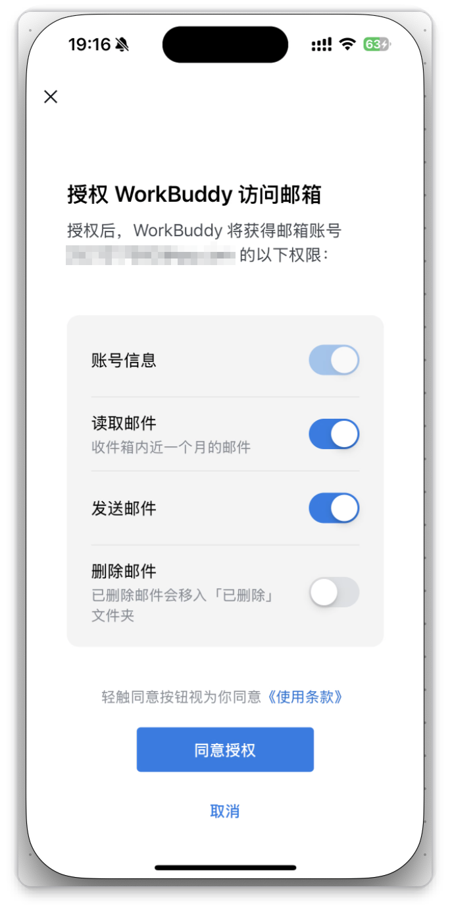
4. 授权成功
手机端显示 授权成功，可在「设置 - 账号 - 安全管理 - 登录设备和授权码 - 应用授权」中管理授权应用。
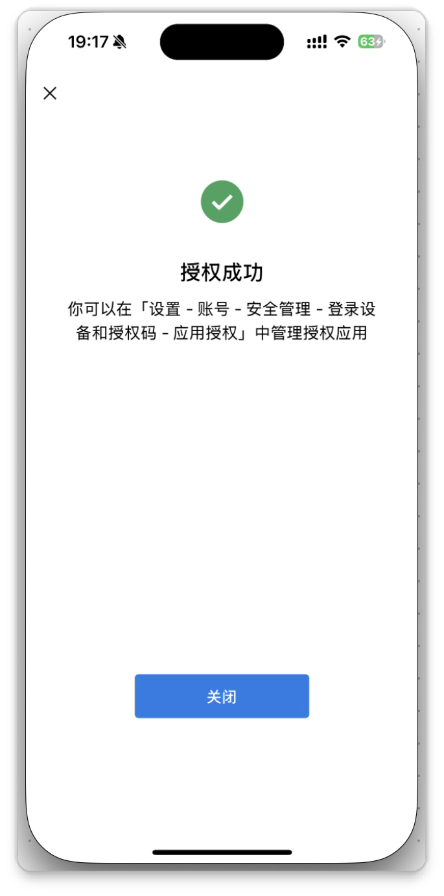
提示
授权成功时点击浏览器弹窗中的打开完成连接，取消或者直接关闭网页可能会导致操作中断，需要重新配置连接器。
5. 连接完成
回到 WorkBuddy，QQ 邮箱卡片名称旁会出现绿色圆点，并提示 连接器 QQ 邮箱 已连接，右侧显示启用/禁用开关。
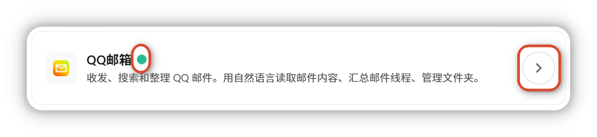
示例：连接腾讯乐享
腾讯乐享连接器支持搜索、创建和管理乐享知识库中的文档，支持导入 Markdown、按标签整理内容、追踪团队文档的更新动态。
1. 点击添加
在连接器管理页面找到 腾讯乐享 卡片，点击右侧的 + 按钮发起连接。
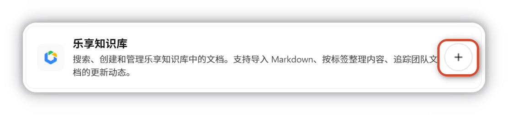
2. 确认授权
发起连接后进入授权确认页面，通过乐享知识库 MCP，WorkBuddy 将能够：
- 按你拥有的权限访问知识库
- 搜索、查询知识库中的内容
- 协助创建与管理知识库中的内容
确认无误后点击 立即前往授权。
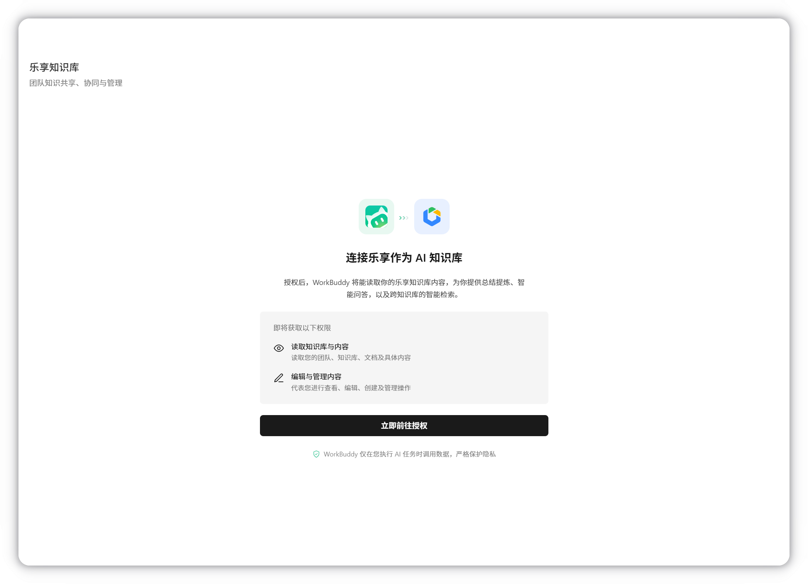
3. 登录乐享知识库
系统会跳转到腾讯乐享登录页面，支持 微信登录、手机号登录 两种方式。
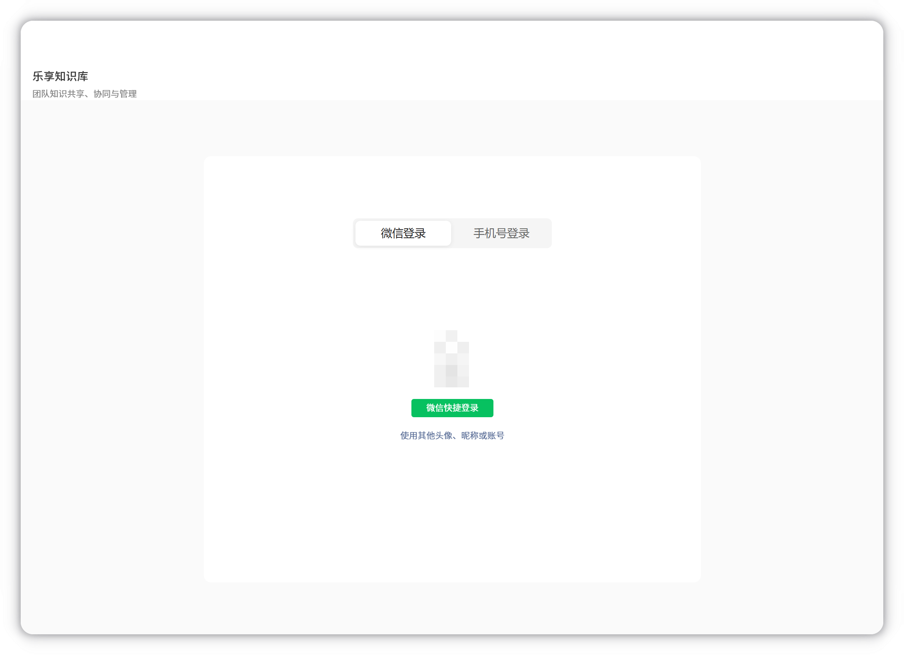
4. 授权成功
页面显示乐享知识库的账号信息，并且展示 WorkBuddy 将要从乐享知识库获取的权限。
确认无误后点击 继续。
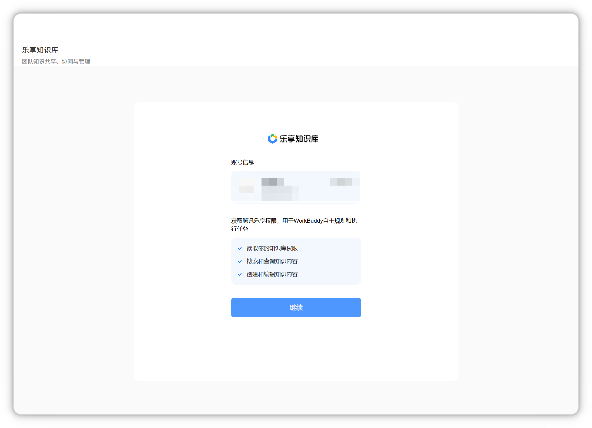
5. 连接完成
回到 WorkBuddy，腾讯乐享卡片名称旁会出现绿色圆点，右侧显示启用/禁用开关，表示连接已就绪。
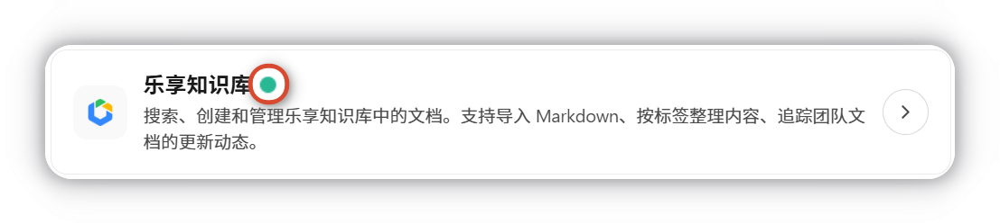
自定义连接器
如需接入其他外部服务，可点击连接器管理页面右上角的 自定义连接器 按钮，安装自定义的 MCP 服务。
提示
自定义连接器的配置方式与 MCP 配置类似，详细说明可参考 MCP。
断开连接器
如需断开已连接的连接器，操作步骤如下：
1. 点击开关
点击已连接的连接器卡片，在弹窗中点击左侧的 解绑。
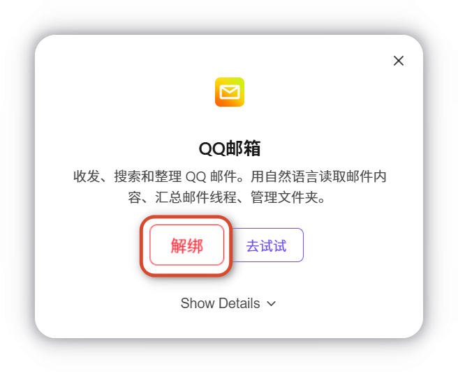
2. 断开完成
系统提示 连接器 QQ 邮箱 已断开，连接器恢复为未连接状态。
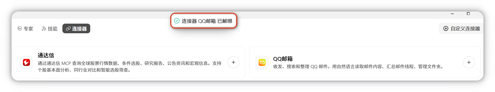
注意事项与重点提示
信息收集与使用
| 收集项 | 类型 | 用途 |
|---|---|---|
| 第三方账号标识 | 必要 | 邮箱地址、账号 ID 等，用于在第三方服务中识别您的身份 |
| 授权凭据 | 必要 | OAuth Access/Refresh Token，或您手动填写的 API 密钥 |
| 第三方业务数据 | 必要 | 仅在您的指令触发时按需读取（邮件、文档、知识库、会议、TAPD 项目数据等） |
| 用户写入数据 | 非必要 | 代发邮件、创建/编辑文档、创建会议等，需您明确指令确认 |
权限边界
- 每个连接器独立授权
- 不主动定时抓取
- 不超出您已有权限范围
安全提示
- 连接器需要相应服务的访问权限，请确保授权信息正确。
- 授权后可随时通过开关禁用或断开连接器。
- 如需撤销 QQ 邮箱授权，可前往 QQ 邮箱 App「设置 - 账号 - 安全管理 - 应用授权」中操作。
- 建议定期检查连接器状态，确保服务正常运行。
积分消耗提醒
连接器自身的读写不消耗积分；WorkBuddy 对外部数据进行理解、汇总时会消耗积分。
第三方共享
本质即与第三方服务交互；凭据由 WorkBuddy 维护以便代您调用。
免责声明
自定义连接器的访问范围由您的配置决定，WorkBuddy 不预设范围，请审慎评估后再启用。
使用建议
- 连接器调用所产生的对第三方服务的访问、读写、消息发送，均以您本人身份与授权范围执行，建议在涉及对外发送、内容修改前再次确认目标对象与内容。
- 第三方服务的可用性、内容真实性由其自身决定，遇到接口异常或服务变更，请优先查看该第三方的服务状态与协议。
- API 密钥与 Token 是访问您第三方账号的钥匙，请妥善保管，避免在公共设备或共享环境填写；不再使用的连接器建议及时撤销授权。